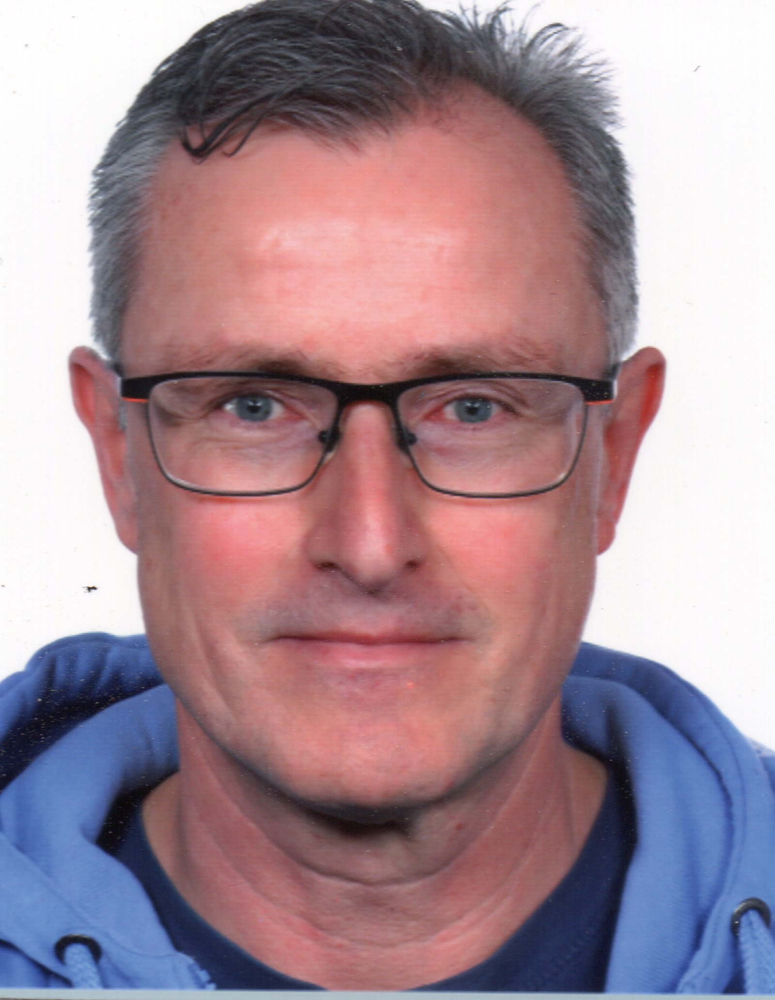

Portfolio of Michael Kurrle

Stay curious and never stop learning
Summary
Education
- Tool and Die Maker - Stihl (1987-1991)
- Dipl.-Ing. (FH) in Mechanical Engineering - FHTE-Esslingen (1996-2000)
- Diploma Thesis: „Cooling of a DMFC Fuel Cell for Automotive Applications“ - Daimler Chrysler AG
Work Experience
- Tool and Die Maker - Stihl (1991-1992)
- Systems Engineer - XCELLSIS (2000-2001)
- Lead Test Bench Engineer - Fuel Cell Systems with Methanol Reformer
- Commissioning of the prototype vehicle NECAR 5.2
ensuring the successful integration, testing and development of the methanol reformer fuel cell system.
- Systems Engineer - Ballard Power Systems (2001-2003)
-
Commissioning of the A-Class fuel cell vehicle
ensuring the successful integration, testing and development of the fuel cell system.
- Systems Engineer - Mercedes-Benz (2003-Present)
-
Commissioning of Mercedes-Benz fuel cell and eletric vehicles
ensuring the successful integration, testing and development of the powertrain.
Contact Me